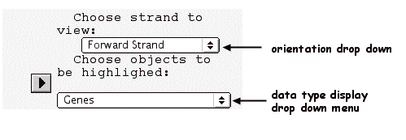
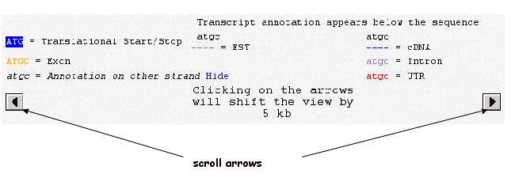

SeqViewer Nucleotide Window
The SeqViewer Nucleotide Window displays a 10 kb region of the Arabidopsis genome sequence with genes, markers, transcripts, polymorphisms, T-DNA/Transposon transgene insertion flanking sequences, and clone ends marked on the sequence.
Contents
Nucleotide window Controls and Legend
Gene feature,polymorphism, transcript, T-DNA/Tn insertion, marker and clone end color-coding are identified in the top half of the left control panel. Italics are used to indicate genes in the reverse orientation. The legend changes, depending upon the types of annotations being viewed. The arrows on the left and right side can be used to scroll the view by 5 kb in either direction.

To view the complement strand, use the drop down menu to change the orientation from "forward strand" to "reverse strand". You can use the drop down menu to select which types of annotation to display on the nucleotide sequence. Display options are:
- Genes
- Markers and Polymorphisms
- T-DNA and transposon insertions
- Annotation Units
- Transcripts
- Genes, Markers, Polymorphisms
- Genes, Annotations Units
- Genes, Transcripts

Other Features:
- Rulers at the top, bottom and left can be used to find the chromosome position of any nucleotide measured from the left/top telomere. Note: the nucleotide positions shown are subject to change as the Arabidopsis genome sequence continues to improve.
- Gene and marker names on the right can be clicked to bring up a page of detailed gene information from the TAIR database.
- When the cursor is placed above transcripts, transposon/T-DNA insertions, clones, markers, genes and polymorphisms a pop up window appears displaying information about the type of object. Click on the object to obtain a detail page from TAIR database.
- Matches to sequence queries are highlighted in red.
- Each nucleotide sequence view has a figure legend displayed on the upper portion of the view. The key changes, depending on the selected data types being displayed in the view.
Sequence Annotation
The nucleotide sequence view will show all annotated objects within the 10 kb view. Each row of the nucleotide sequence view displays 100 base pairs of sequence in the default (forward strand) orientation. The pop up windows display information about the annotated objects and clicking on the object (e.g. a marker) will open a window with the detail page from TAIR database.
Gene Annotation:
- Coding regions are UPPERCASE and noncoding regions, including introns and UTRs, are lowercase. This allows users to retain some annotation information when copying and pasting sequences into a new document.
- UTRs are in red, exons are in orange and introns are in light purple.
- Start and stop codons are highlighted in blue.
- Genes in reverse orientation appear in italics (with annotation color coding).
- Gene names and orientations are visible along the right hand margin of the nucelotide sequence.
Polymorphism Annotation:
- Insertions.The two nucleotides flanking the insertion are highlighted in red.
- Deletions are highlighted in dark green.
- Compound polymorphisms (combinations of deletions/insertions or subsitutions) are highlighted in pink.
- Substitutions are highlighted in teal.